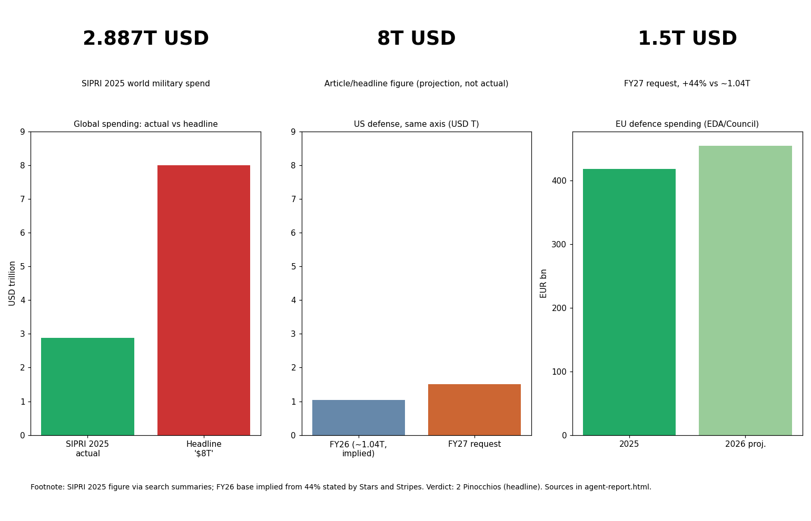

Most checkable facts hold: the $1.5 trillion FY2027 request (+44%, implied FY26 base about $1.04T), Adam Smith's "in excess of $1 trillion" remark, EU spending of EUR 418bn (2025, 2.2% GDP) rising to EUR 454bn, and Hegseth's Shangri-La appeal. The weak point is the headline: global defense spending has not "hit $8 trillion"; SIPRI measured $2.887T for 2025. The $8T is a projection/extra-spending estimate that I traced to a Mike Dolan column (citing Stavridis), not to Carlyle as the article is summarized as saying.
| Claim | Result |
|---|---|
| $1.5T FY27 request, +40%+ | Confirmed (44%) |
| Smith: budget "in excess of $1 trillion" to be avoided | Confirmed (Stars and Stripes, 2026-11-08) |
| G7 2.0% of GDP, 3.8%, $8T per Carlyle | Figures match Dolan column; Carlyle attribution unconfirmed |
| EU EUR 418bn 2025, 2.2%; EUR 454bn 2026 | Confirmed (Council/EDA) |
| Hegseth urged Asian allies at Shangri-La | Confirmed (30 May 2026, 3.5% GDP ask) |
| Patterson warns of deficits/inflation/rates | Confirmed (CFR commentary) |
| US passed $1T in FY2026; about one-third of world spend | Plausible: SIPRI-based ~37% share; $1T baseline per Hegseth testimony |